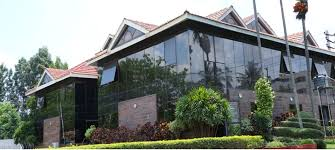
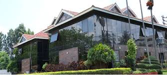

Mr. G.Dayanand
It is well known that India is home to a significant proportion of youth of the world today. The world is focusing on India as a source of technical manpower. They are looking at our students as a pool of talents. If our students make up their mind and work in close unity with the working class of people, they can do wonders.
In the recent years the world has come to look India with renewed respect and recognizing them as strong global power in the world. Also, it has a future when the fabled richness of India’s art, culture, intellectual explorations, and spiritual pursuits will begin to show their full radiance in bringing success to India.
Youth is the period when man is full of energy, ambition and zest for life. The power possessed by youth is a recognized force today. The power of the energy can be used for both constructive and destructive purposes. The youth of today do not have strong characteristics of past generations.
The change in attitudes over time may be due to the fact that today’s generations do not face nearly as many hardships as in the past. With all the technology and scientific breakthrough, they have it easy now. To conquer a problem in a modern lifestyle today is to have a steady income. In retrospect, today’s youth have better prospect with the youth of the past when things were lot more difficult.
Unfortunately today we find the youth more interested in pursuits which are not useful to them as well as the nation, we must control this, and we must motivate our youth. We must teach responsibility and goal setting. Things have to change with the system of education at our colleges and considering the older generation to be good role models and mentors.
Sapthagiri College of Engineering, Bangalore, Karnataka state is one such example. SCE stands on the strong edifice of Sri Srinivasa education and charitable trust under the guidance of its founder chairman late Sri T.Giriappa instituted during the year 2001. The institute is situated amongst the lush green ambience and has a vision of “Integral development of students and empowering them for social transformation”. And mission “To provide facilities for academic excellence, training in soft skills and technical skills and job placement”.
The institute has played a significant role in all round development of young engineers in addition to bridging of the gap between all levels of education; the institute has a greater responsibility of making the student fraternity to meet the national and global demands.
India can become a developed nation only if everyone contributes to the best of his or her capacity and ability. Youth are wholly experimental and with the full utilization of their talents, India will become a prosperous nation. Let’s hope for the same.
.jpg)
.jpg) 

.jpg)
{kind=link}